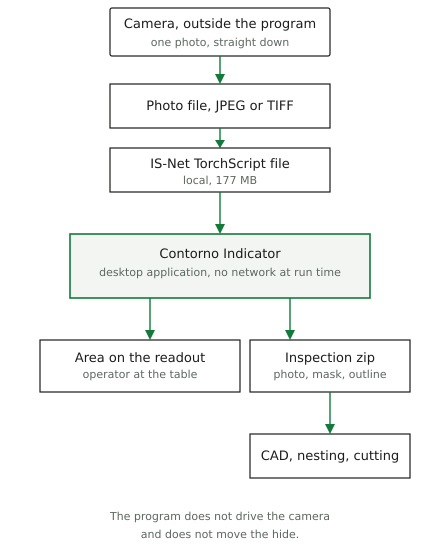
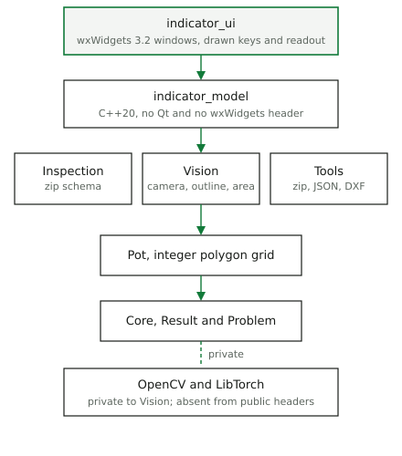
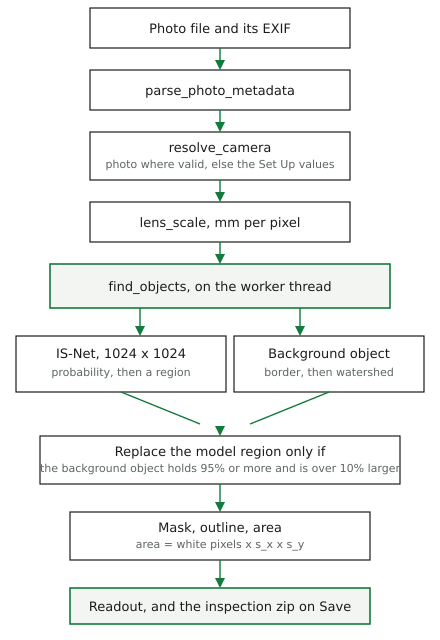

How the hide-area method is implemented, and the tools that build and check it
Preprint draft, 7 November 2026
The companion article measures the surface of an animal hide from one photograph. This paper describes the program that carries that method to an operator: Contorno Indicator, a desktop application on wxWidgets 3.2. The measuring code lives in five C++20 libraries that do not know the user interface. The application adds a window, a worker thread, seven languages, and an inspection file that keeps the photograph, the mask and the outline. OpenCV and LibTorch stay behind one library. A build without LibTorch still compiles and says, on screen, that it cannot measure. The program is configured with CMake and Ninja, through buildkit 2.0.0, and checked by GoogleTest under CTest. The release build of this tree registers 399 tests.
Two documents describe Contorno, and they answer different questions.
The article Measuring the surface of animal hides from a single
photograph (docs/articles/contorno-area-measurement/)
is the method: which pixels belong to the hide, and what area those
pixels stand for. Its Python scripts implement that method again, for
the figures and the uncertainty budget. They do not call the C++
libraries.
This paper is the program an operator runs. It states how the method
was allocated to libraries and to the window, which interfaces the parts
share, and which tools produce the executable and the tests.
docs/architecture/architecture.md is the document for
someone who is about to change the code. Where a count can drift, this
paper gives the date it was read.
The statements of versions, paths and test counts were read from this tree and from the development machine on 7 November 2026. The physics (the scale formula, the bias of the outline, the cases where the background step fails) is not re-measured here. Those numbers stay in the article.
Hides are traded by surface. Indicator shows that surface from a photograph taken straight down onto a table, and it keeps the photograph as the evidence of the measurement.
The program does not drive the camera, does not move the hide, and does not use the network while it runs. The IS-Net file and the manual are local files. Downstream CAD, nesting or cutting is outside the program: it receives the outline as DXF inside the inspection archive.

The operator at the table needs a number and a way to save the job. Whoever buys or sells the hide needs that number to be the area of the saved mask, not a second computation. The cutting side needs the outline in millimetres, in a file a CAD program can open.
There is no separate requirements database. The rules below are the ones the build and the tests already enforce. Each names the check.
| Rule | Where it is held |
|---|---|
| Libraries do not depend on a UI toolkit. | No Qt and no wxWidgets in any
libraries/*/CMakeLists.txt. |
| OpenCV and LibTorch never appear in a public header. | Both are private dependencies of Vision. Only
Ai_impl.cpp includes torch. |
| A build without LibTorch still compiles, runs and passes its tests. | BUILD_VISION_AI, ai_available(). Tests
that need the model skip. |
| The application’s model layer includes no widget header. | indicator_model links only the Contorno libraries.
WxLayers.ModelHasNoToolkit reads the sources. |
| Library errors are a code plus values, not an English sentence. | Core::Problem. The application translates by code
(LibraryText). |
| Public library functions do not throw across the boundary. | noexcept wrappers return
Result<T>. |
| Without the model, the program measures nothing and says so. | The Unavailable state. No second, silent outline method. |
| The number on the readout is the area of the saved mask. | Area is countNonZero(mask) × s_x × s_y. The self-test
compares the readout with that area. |
| The original photograph is stored untouched. | The inspection zip keeps original.<ext> byte for
byte. No annotated image is written. |
The last three are product rules. The first six are there so a change to the window cannot silently change the measurement, and so a machine without LibTorch is still a coherent build.
Contorno/
libraries/ measuring core, no UI toolkit
Core/ Result<T>, Problem
Pot/ integer polygon geometry
Tools/ zip, JSON, DXF
Vision/ camera, EXIF, segmentation, outline, area
Inspection/ the inspection zip
applications/
Indicator/ the desktop application
src/model/ thread, settings, messages
src/ui/ wx windows
Vision is the measuring core. Inspection owns the file format and
calls Vision and Tools. The application is two static libraries and then
the executable Indicator.
indicator_model is plain C++20. Text is UTF-8
std::string. Paths are std::filesystem::path.
It links Tools, Vision and Inspection. The seven string tables
(strings/indicator_<lang>.cpp) compile against this
library, so a language can be tested without opening a window.
indicator_ui is the wxWidgets layer: the main window,
the set-up dialog, the file dialog, the theme, and the controls that are
drawn by hand. It is the only place that includes wx.
Anything that must be true for a saved inspection — the scale, the
mask, the outline, the area — sits below the toolkit. Anything that is
only true of a screen — colours, languages laid out left to right or
right to left, which button is pressed — sits above it. The worker
thread is on the model side and receives a function that posts its
result back. The UI passes wxTheApp->CallAfter, so the
result arrives on the thread that owns the widgets. Tests of the model
pass a function of their own and never open a display.
A public call returns Result<T>: either a value or
a Problem. A problem carries a code
(camera.scale), an English template used as a fallback, and
named values ({path}, {range}). The
application does not show the template. LibraryText maps
the code into the current language. Paths and text that came from an
exception stay as they arrived.
Wrong-side access of a Result (reading the value of an
error, or the error of a value) aborts the program, and a test covers
it. A forgotten check therefore stops the program instead of passing on
a wrong value, and a library never has to know the operator’s
language.
Pot stores polygons on a grid of 1 µm
(units_per_mm = 1000): Point64, a closed ring,
an outer ring counter-clockwise and holes clockwise. Integer coordinates
make the saved outline bit-for-bit reproducible. The millimetre values
an operator sees are a conversion at the boundary, not the
representation the file is written from.
The physics is the article’s. The program runs it as one sequence.

Distance always comes from the Set Up dialog. Focal length is taken from the photograph when it falls in [0.1, 2000] mm, and the pixel size when it falls in [0.1, 100] µm; otherwise the setting is used and the camera line says why. The scale is
For a photograph shown rotated by 90°, x and y are swapped. This is the thin-lens scale of a plane parallel to the sensor. It ignores focus travel and distortion. Both limits are stated in the article and in the manual; they are not corrected in the code.
The outline is IS-Net, exported once to TorchScript and run on CPU.
Ai_impl.cpp converts the image to RGB, resizes it
bilinearly to 1024 × 1024, applies (x/255 - 0.5), and runs the module.
The module is cached per path behind a mutex. The output is checked for
shape and for finite values, normalised, and resized back. A missing
file, a wrong shape or a non-finite output is a failed analysis, not a
zero area.
The mask then follows the article’s second step. A threshold of 0.5, a cleaning of one-pixel spurs, the largest region, and holes kept only when they are large enough and the model sees the table through them. On a spotted hide the network can take the dark patches for the object. A classical background step, on a shrunk and median-filtered copy, may replace that region when it holds at least 95 % of it and is more than 10 % larger. The window then adds a line asking the operator to check the outline. Where the hide runs along much of the frame, the rule usually keeps the model’s region. A hide that only touches the frame in places can still have its region replaced.
The area is the count of white pixels in that mask, times (s_x) and (s_y). The outline written to DXF is that same mask, simplified within 0.5 mm, so the readout, the PNG and the DXF describe one region.
The GUI thread owns every widget. Analyser runs
find_objects on one worker thread. A request made during a
run waits. A newer request replaces the one that is waiting. The result
of a run that a newer request has made stale is dropped, and the readout
stays dimmed until the new result arrives. The worker does not touch
widgets. It hands a task to the Post function it was given,
and that function must run the task asynchronously: the task joins the
worker that posted it.
The destructor drops a waiting request and joins the worker. A run
already inside LibTorch is not cancelled. Shutdown waits for it, then
discards the result. WxWindow.CloseWhileAnalysingIsClean
covers that path.
At start the program loads settings, language and theme. The states that follow are the ones the window actually implements.
| State | Readout | Save |
|---|---|---|
| No photo | dashes | refused |
| Analysing | previous value, dimmed | refused |
| Result | area | allowed |
| Saved inspection, reopened | the saved area | allowed |
| Failed | dashes, and the reason | refused |
| AI unavailable | dashes, and why | refused |
Opening a saved inspection does not run the model again. The area on screen is the area in the file. A new photograph starts an analysis.
Save writes a zip, through Tools, with stored entries only. The
parser checks the CRC, and it rejects absolute names, ..,
duplicates, encryption, split archives and archives over the size limit.
The order is fixed:
| Entry | What it is |
|---|---|
original.<ext> |
the photograph’s bytes, untouched |
mask.png |
8-bit grey, object 255, same size as the photo |
camera.json |
distance, focal length, pixel size, and whether each came from the
photo or from settings. Schema contorno-camera, version
4 |
parameters.json |
minimum area and the 0.5 mm outline tolerance |
objects.dxf |
outer ring and holes, layer OBJECT, image millimetre
frame |
result.json |
image size, the two scales, the area, the rings |
The image millimetre frame has x to the right and y up, origin at the bottom-left of the photograph. A pixel column (c) and row (r) in an image of height (H) maps to
Reading still accepts camera.json versions 1 to 3, as square pixels,
and older hide inspections. Those older files yield the photograph and
the camera only, and they are analysed again. mask.png must
match the image size and contain only 0 and 255.
Settings are a separate, smaller file. On Linux,
WxConfigStore asks wx for the user config directory. That
directory follows XDG_CONFIG_HOME, and the file under it is
indicator.ini, in Contorno/Indicator. The
self-test does not use that file. It uses an in-memory store, so a test
run cannot change the operator’s camera.
The main window is a photograph, a second linked view, a control
panel and a status bar. The panel carries the wordmark, four keys, the
mask toggle, the message log and a seven-segment readout. Those keys,
the readout, the log and the progress bar are drawn by the application.
Native controls are used where GTK will take the theme’s colours. The
file dialog is a wxDialog around
wxGenericFileCtrl, because the GTK file chooser does not
follow the theme.
The window icon is compiled into the binary. A path to a PNG is
useless once the process is not started from the source tree, and under
Wayland the desktop does not ask the window for a file. The taskbar icon
comes from the desktop entry contorno-indicator, which is
also the application id (WM_CLASS on X11, the Wayland app
id).
Seven languages are compiled in: English, German, Spanish, Italian,
French, Dutch and Arabic. Strings are keyed
(message.ai.no_model) and carry
{placeholders}. Numbers with units are not translated:
Latin digits, a point as the decimal mark. Arabic sets right-to-left on
the dialogs, the log and the key labels. The main window’s geometry does
not mirror. The log stores messages, not already rendered text, so a
change of language rewrites old lines and keeps their times.

The question mark in Set Up opens the manual in the dialog’s language. The file is searched next to the executable, then in the source tree, then in English. A Chromium-family browser is started as an app window with a private profile, 1200 × 800, centred on the dialog’s screen. If none of those browsers is present, the system browser is used. If that fails, the warning names the file.
wx’s own strings, those of the file dialog, are not in our tables.
WxCatalogue.cmake compiles wx’s catalogues into the
executable for German, Spanish, Italian, French, Dutch and Arabic. It
prefers the machine’s wxstd.mo. If that is missing it
downloads the wx 3.2.8 .po, checks a pinned
SHA-256, and compiles it with msgfmt. Offline, or without
msgfmt, those strings stay in English and the build
warns.
The pattern used throughout is: detect a failure at the boundary that can see it, refuse the measurement or the file, and leave a message the operator can read in the current language.
| Failure | What the operator gets |
|---|---|
| Built without LibTorch, or the model file is missing | The photograph, no area, and a line that says the outline is unavailable and where the file was sought. |
| Model corrupt, wrong shape, or non-finite output | The analysis fails. The previous result stays. |
| Unreadable photograph | The import fails. The previous state stays. |
| Camera value in the file outside the accepted range | The setting is used, and the camera line says the file value was rejected. |
| Damaged or hostile zip | Open is refused, with the entry and the reason. |
| A result that a newer import has superseded | Dropped. The readout stays dimmed. |
| Nothing on the table above the minimum area | Success, area 0, “No object found”. |
| The model kept only part of a spotted hide | The background object is measured, and a line asks for the outline to be checked. |
| No browser for the manual | A warning that names the manual file. |
The case that is deliberately not handled by a fallback is the missing model. A classical-only outline was tried in the work that led to the article, and it was not accurate enough where the hide is close in colour to the table. Shipping it as a silent spare would put a different instrument behind the same readout.
The language of the program is C++20. The build is CMake (3.29 or newer; 3.31.6 on the development machine) with the Ninja generator (1.12.1 here). The compiler this tree is developed with is g++ 14.2.0 on Debian 13. Those three version numbers were read on the development machine. The versions the build pins are in the tables below.
buildkit 2.0.0 supplies the warnings, GoogleTest, the coverage flags,
the install layout and the version taken from the git tag
vX.Y.Z (fallback 1.0.0). cmake/buildkit.cmake
uses BUILDKIT_DIR, else a checkout at
../buildkit, else a fetch of tag v2.0.0.
Contorno replaces buildkit’s library and application macros so that a
header-only library and the wx entry point fit the tree. The executable
is created with create_application(ENTRY WX_ui).
Presets live in CMakePresets.json. Each has its own
directory under build/.
| Preset | Build type | What it adds |
|---|---|---|
default |
Release | the ordinary build |
debug |
Debug | |
coverage |
Debug | ENABLE_COVERAGE (gcov / lcov) |
asan |
Debug | AddressSanitizer and UndefinedBehaviorSanitizer |
ci |
Release | the continuous-integration directory |
wxWidgets is an installed dependency, found the way buildkit finds a
development package. This machine has 3.2.8, which is also the version
whose translations are pinned. On Linux the UI links GTK 3 (3.24.49
here) so that text fields take the theme’s frame and selection colours.
That link is Linux-only. The window tests set
GDK_BACKEND=x11, because they read pixels back from the
window.
OpenCV is the same kind of dependency: the installed library, or a
fetched archive with a pinned URL and SHA-256 when
CONTORNO_OPENCV_FETCH is on. This machine has OpenCV
4.10.0. OpenCV is used inside Vision for the image, the contours and the
morphology. It is not a public type.
LibTorch is the CPU build 2.12.0. CMake looks in
/opt/libtorch and Torch_DIR, then in the build
tree, and otherwise downloads a zip whose SHA-256 is in
cmake/TorchSupport.cmake. A failed download warns and
continues. Vision then builds with ai_available() false.
The IS-Net file is not part of all. The target
isnet_model builds it in a Python virtual environment with
torch==2.12.0, from the DIS weights, URL and hash pinned,
using the article’s export script. The C++ runtime and the exporter are
the same PyTorch minor version on purpose. The PyTorch documentation
marks TorchScript as deprecated in favour of torch.export
(read on 7 November 2026). Loading it is confined to
ai_probability_impl, which is the function a later runtime
would have to replace.
Other tools, used at build or check time and not linked into the measurement:
| Tool | Role |
|---|---|
| Python 3 | model export; build_manual.py --check;
check_sources.py |
GNU gettext msgfmt |
wx’s own translations, when the .mo is not already
installed |
rsvg-convert |
PNG sizes of the desktop icon from the SVG |
update-desktop-database |
registers the build-tree desktop entry under
~/.local/share |
| Pandoc and Chromium | this paper and the measurement article, HTML then PDF |
| GoogleTest | the unit tests |
| CTest | runs them, including the manual check and the self-test |
BUILD_WX_UI defaults on. Without wxWidgets, or with that
option off, Indicator and its tests are skipped and the libraries still
build. BUILDKIT_OFFLINE refuses downloads. A model or a
catalogue that cannot be fetched then degrades as described above,
rather than failing the configure step.
The commands used on this tree:
cmake --preset default
cmake --build --preset default --target isnet_model # once
cmake --build --preset default
ctest --preset defaultAt run time there is no Python. Indicator is one native process. It
links the Contorno libraries, wxWidgets, GTK 3 on Linux, OpenCV and the
LibTorch CPU libraries. Those torch libraries sit beside the executable
and are found by an RPATH of $ORIGIN. The IS-Net file and
the manual are local files. The process does not open a network
connection to measure a hide. Python is used to export the model, to
check the manual, and to produce the measurement article. It is not on
the operator’s path.
The article’s scripts implement the same method again, so the figures do not depend on this program. Their times and the program’s times are therefore two readings, not one benchmark repeated.
The article’s timings were taken on the same development machine as the C++ timings below (its Section 3.2 and Section 3.5):
| What was timed | Time |
|---|---|
| rembg IS-Net only, cowhide 1600 × 1200, one call after a warm-up | 1.64 s |
| rembg IS-Net only, black calf 1334 × 1602, same conditions | 1.48 s |
| TorchScript forward alone, 1024 × 1024, 4 threads, median of 5 after a warm-up | 1.822 s |
| Whole Python analysis, network and background check, median at 1600 × 1200 | 2.3 s |
| The same, median at 4000 × 3000 | 7.5 s |
The C++ path was timed on 7 November 2026 on the development machine,
an Intel Core i7-10510U (4 cores, 8 threads, no GPU used). A small
program linked to the release build of Vision called
find_objects with the background check on, the outline
tolerance at 0.5 mm, and a scale of 1 mm/px. The scale enters only the
minimum-area filter, which turns a minimum in mm² into a pixel count; it
does not change the network’s input. One warm-up was discarded. LibTorch
reported 4 threads, which is the default it chose on this CPU. The
median of the five runs:
| Photograph | Size | Median | The five runs |
|---|---|---|---|
cowhide_stretched.jpg |
1600 × 1200 | 2.69 s | 2.56–2.81 s |
calf_black.jpg |
1334 × 1602 | 2.64 s | 2.57–2.70 s |
The manual’s capture of that same cowhide, inside the real window, logged 2.9 s. One run, with the file read and the result posted back to the interface, beside a median of 2.69 s for the library call alone.
These timings are not one benchmark. The 2.3 s is a median over the article’s set of 1600 × 1200 photographs, in Python. The 2.69 s is five runs of one file, in C++. The rembg lines are the network call only, so they sit closer to the 1.822 s forward than to a whole analysis. On a photograph of this size the native program takes about two and a half seconds, and most of that is the 1024 × 1024 forward.
Verification here means: does the program we built match the rules in section 3? Validation against a certified area, on real hides, is the open measurement of the article. It has not been done. The software tests do not stand in for it.
CTest on the release preset registers 399 tests, counted from the
discovery files of build/default on 7 November 2026. They
add as follows.
| Suite | Tests | What it is responsible for |
|---|---|---|
test_contorno_core |
18 | Result, Problem |
test_contorno_pot |
2 | the 1 µm grid |
test_contorno_tools |
28 | zip, including archives written by Python; JSON; DXF |
test_contorno_vision |
74 | the scale, EXIF, the outline on the sample photographs, holes, spotted and speckled hides |
test_contorno_inspection |
14 | the zip schema, older versions, legacy files |
test_indicator_model |
90 | analysis, settings, languages, messages, the manual locator. No display |
test_indicator |
170 | windows on a display: panel, readout, log, file dialog, set-up, languages, right-to-left |
indicator_self_test |
1 | the real Indicator process |
indicator_manual |
1 | every manual page, its links, and every label it quotes |
samples_sources |
1 | every sample file has a row in
docs/samples/SOURCES.md |
The self-test is the integration check. It launches
Indicator --self-test on
docs/samples/leather/calf_black.jpg with
GDK_BACKEND=x11 and a timeout of 300 s. It imports the
photograph and waits, checks that the readout shows the area of the
result, imports again while an analysis is running and checks that the
readout never shows a stale number, writes the zip and checks the six
entry names and the DXF rings, opens that zip and checks that no new
analysis starts and that the rings match, then writes a screenshot. Exit
code 77 means the outline is unavailable (no LibTorch, or no model
file). CTest treats 77 as a skip, not as a failure. The self-test uses
the in-memory settings store.
The manual check is the other kind of integration.
build_manual.py --check builds every page in every language
and compares the labels it quotes with the string tables. A renamed key
fails this test, which is the reason the manual and the translations can
be reviewed as text.
What this suite does not do: it does not compare an area with a reference instrument, it does not run on Windows or macOS in this project’s continuous practice (the desktop entry and the icon path are written for Linux; the executable has resource branches for Windows and macOS), and it does not treat the duration as a pass or fail. Section 7 is a reading of that duration, not a limit in the test suite. The application still logs its own seconds with each result.
cmake --install on Linux lays the program out as
follows. Libraries are shared, and the LibTorch shared objects are
installed beside them with an RPATH of $ORIGIN, so the
executable finds them without a system-wide torch.
bin/Indicator
lib/libcontorno_*.so and the LibTorch objects
share/contorno/models/isnet-general-use.pt
share/contorno/manual/
share/contorno/articles/contorno-area-measurement/
share/applications/contorno-indicator.desktop
share/icons/hicolor/.../contorno-indicator.pngThe model, the manual and the measurement article are installed with
the application. A developer build finds the model and the manual next
to the executable first, then in the source tree, and does not need an
install to run. Building Indicator also copies the desktop
entry into the current user’s ~/.local/share, with
Exec rewritten to the build-tree binary, so a Wayland
session shows the icon before anything is installed.
The measurements cited here were made in the article, not repeated for this paper.
The scale (d p / f) overestimates length by about (f/(d-f)): near +0.87 % in length and +1.76 % in area at 13 mm focal length and 1500 mm distance. A calibration on a known object removes it. The article also measured an outward bias of the outline, on the order of 0.6 % to 1.8 % of area on the synthetic photographs. A small calibration card inherits that bias in the wrong direction for a large hide; the manual asks for a board of about a square metre.
There is no distortion correction. The hide should stay central. Only the largest object is measured: two hides that touch become one area, which is a choice made so that one photograph gives one number. The background step fails when the border of the frame is not background. A mat smaller than the frame is the case the article shows, at about +80 % on one synthetic photograph.
TorchScript as a file format is the migration risk. The rest of the program never includes a torch header, so the risk is local, but it is real: a future PyTorch may refuse the file the exporter writes today.
The tests fix the behaviour the code has, including that of the background rule. A test passes as long as the rule behaves as coded, even on a hide that fills the frame, where the rule is wrong.
From docs/articles/contorno-indicator/:
scripts/build_paper.shThe script runs Pandoc, then headless Chromium, and writes
contorno-indicator.html and
contorno-indicator.pdf beside the Markdown. It uses the
stylesheet and the wordmark of the measurement article, so the two
papers print as one series. The figures are the SVG files in
figures/. They are drawn to be read down a narrow A4
column.
The author used an AI assistant (Claude, Anthropic) to draft and revise parts of the text. The author reviewed and revised the text and takes full responsibility for the content.